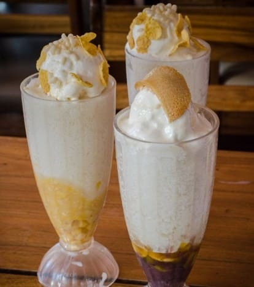

Chaolong
An order of beef stew noodles; reddish oil covered the surface of beef stew noodles, coloring the white bowl. The beef was tender providing a texture and hand made noodles. it was a good snack especially during rainy seasons, a cheap but satisfying merienda.

Danggit Lamayo
Lamayo is what palawenos call, of fresh marinated danggit with vinegar, pepper, and garlic. It is usually deboned and very faamous in Palawan. The term lamayo refers to how fish is prepared. It is marinated first before partially drying them in the sun. After it is fried, it contains just the right amount of saltiness and crispiness of your usual dried danggit. This dish is a popular choice for breakfast with the usual egg and tomatoes. Come and Experience this delicious Danggit Lamayo.

Hopia
Bakers Hill in Puerto Princesa City is the most famous bakery in the entire province. Baker’s Hill is literally on top of a hill. It is located at Sta. Monica produced various pastries and baked goods such as mamon, crinckles, brownies, pianono and the most famous and best seller HOPIA. There are different flavors of hopia on sale. There’s hopiang ongo, hopiang ube, and original flavored hopia. So if you love hopia or other kind of bread then you should go to Baker’s Hill.

Halo-Halo
Creamy Halo-Halo in Noki Nocs that you shouldn’t miss when you visit in Palawan. This sweet dessert is made up of a combination of various ingredients such as crushed ice, sweet beans, pinipig, milk, corn flakes, and a topping of ice crea, and leche flan. It is the perfect refreshments for a hot weather specifically during summer. This sweet dessert is quite addictive and would definitely be something you’ve loved to eat often. A definitely must try when you visit Palawan.

Seaweeds (Lato)
Palawan is sorrounded by aquatic body with a rich marine life. But this beautiful island is not just a top tourist spot, it is also the third largest producer of seaweeds and other aquatic plants. These areas are prominent in production of seaweeds: Agutaya, Cuyo Island, Cagayancillo, Balabac, and Calamianes Group of Island.
.jpg)